7. Topological Qubits#
Source
This chapter follows TU Delft’s QTM2x course on edX closely, with its figures and quizzes, and adds my own notes. Where the text says we, the course’s lecturers are speaking. I am grateful to TU Delft for teaching this openly.
7.1. Introduction to Topological Qubits#
Previously we have discussed qubits realized with electron spins and superconducting circuits. Despite the differences in their hardware implementation, these platforms have something very important in common. The qubits are imperfect and subjected to noise. For example, fluctuations in magnetic fields can perturb an electron spin such that its phase is lost. This is why we need quantum error correction.
Now we will introduce you a completely new kind of qubit, which can potentially alleviate the need of quantum error correction in a future quantum computer. This qubit is based on a quasi-particle called Majorana fermion, which is halfway between being an electron and not being an electron. When you fuse two Majoranas together you end up having one or no electrons. The fact the that the information (having or not having an electron) is delocalized in two Majoranas far from each other, makes harder for the environment to perturb its state.
The promise of a qubit much less sensitive to noise than other implementations was elusive until just a few years ago, when this particle was made a reality by physicist and engineers in the Netherlands, get to know a bit more here about what they are.
In the first three videos, Michael Wimmer will introduce the concept of topology and Majorana bound states. Attila Geresdi will then explain, in an other three videos, how we can realize quantum gates and in which kind of physical system we can find this new type of quasi-particles.
7.2. Majorana fermions and where to find them#
Now we will introduce you to topological qubits. To understand what a topological qubit is and how it works, we will start by explaining the concept of the so called Majorana fermions or Majorana bound states. Please note the following error at \(t=3: 00\), the correct operators should read:
V
In the next we want to introduce topological quantum computing. To understand what topological quantum computing is, we first need to introduce you to the basic building blocks which are the so called Majorana fermions or Majorana bound states. To understand Majorana fermions it is useful to first have a quick glimpse at high energy physics.
In high energy physics we know that for every particle there is always an antiparticle. For example, there is an electron and positron, a proton and antiproton and so forth. These are examples of what we call Dirac fermions. However, there is also a separate kind of fermion in high energy physics which is called a Majorana fermion.
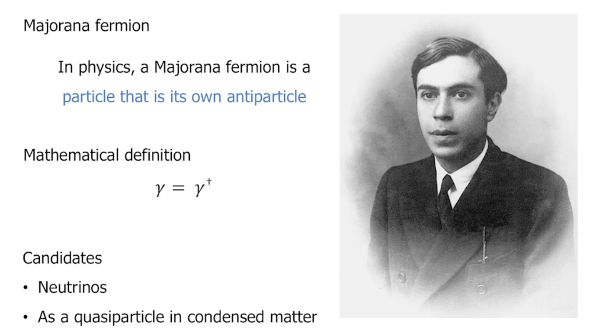
It is special because it is a fermion which is its own antiparticle. The concept was actually first introduced by Ettore Majorana whose picture you can see here. Interestingly, to this date there are no Majorana fermions known in nature as elementary particles. This is actually very similar to Majorana’s life story itself. He himself vanished during traveling on a ship, nobody knows for sure what happened to him. Majorana fermions also could exist in principle, but nobody knows for sure if they do. The definition of a Majorana fermion is that it is a particle that is its own antiparticle. In physical terms this means that the creation operator equals the annihilation operator. There are some candidates for these Majorana fermions. For example, in high energy physics neutrinos are generally described as Dirac fermions, but there is an extension in which they could be Majorana fermions.
But people have also thought about how one could effectively realize Majorana fermions as quasi-particles in condensed matter systems. This will be the topic of this lecture. There is a little caveat here; what we will find in condensed matter are not quite the Majorana Fermions that high energy physicists are looking for. What we find are states, and it’s actually more appropriate to call them Majorana bound states, which is the term I will be using from now on, or I will simply refer to them as Majoranas. To introduce Majorana bound states, we can first do a simple mathematical trick. In condensed matter physics, a state can be filled, this is an electron, or it can be empty, in which case we have a hole.
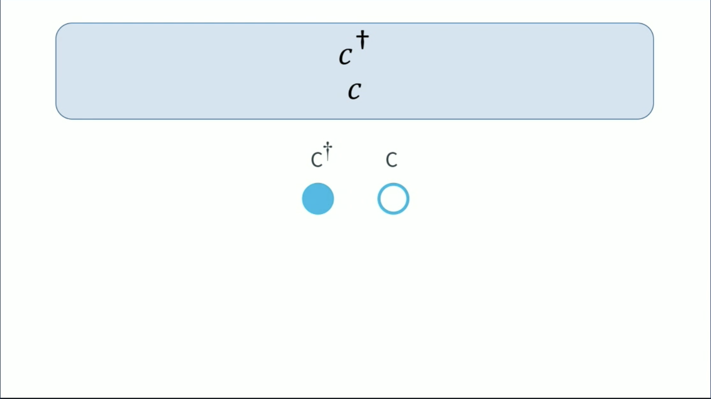
These are the equivalent of particle and antiparticle, respectively. They are described by fermionic operators: creation operator c dagger for the electron and annihilation operator c for the hole. Now, I can do a simple linear superposition of operators: an equal superposition of a creation and annihilation operator. It is very easy to see, I urge you to do the mathematics yourself, that those operators are Majorana operators: Gamma 1 equals gamma 1 dagger, and gamma 2 equals gamma 2 dagger.
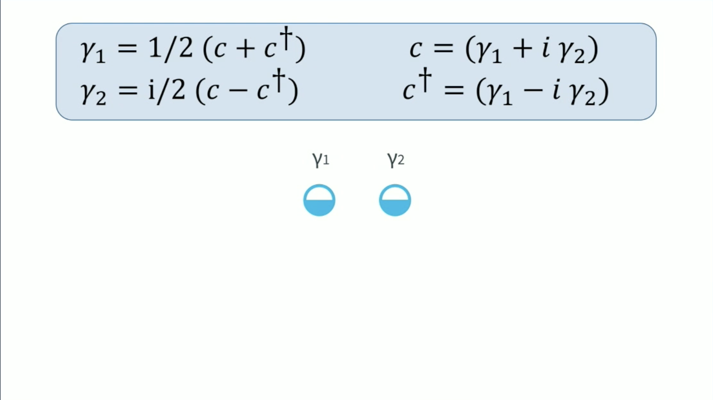
Graphically, you can see that these states are at the same time occupied and unoccupied. Of course, this was just a mathematical trick: a transformation to go from one basis to another one. What you see here is that still, one ordinary Fermionic operator can always be described by two Majorana operators. However, once you can separate the two Majorana bound states, and they become distinguishable from each other, then things become interesting.
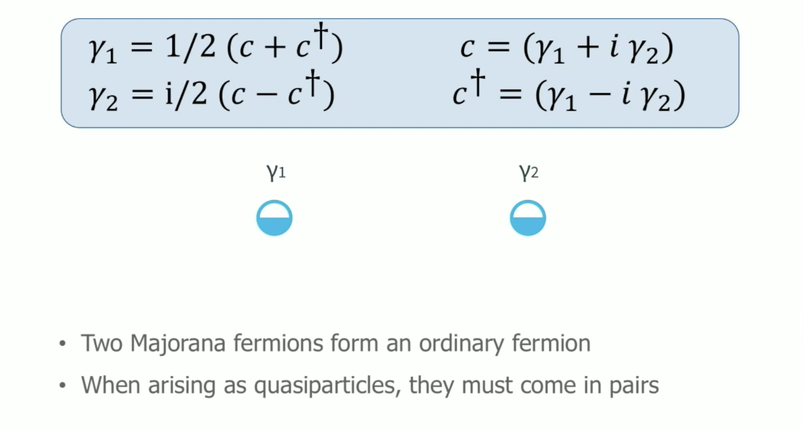
We can summarize at this point: First, two Majoranas form one fermionic state. Second, as quasiparticles in condensed matter systems, they always come in pairs, in condensed matter the building blocks are always ordinary fermions. Now, what is the connection to qubits? With fermionic states, we can encode qubits.
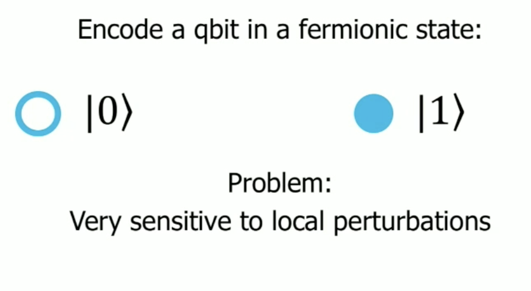
If the state is empty this will be the state 0 of the qubit, and if it is filled it is the state 1. An example for this is charge qubits. The problem is that these are usually very sensitive to local perturbations. But now Majoranas come to the rescue!
As I just told you, 2 Majorana’s correspond to 1 fermion. But if I have 2 spatially separated Majoranas I can encode one fermionic degree of freedom in a very nonlocal way, protected from any local perturbation.
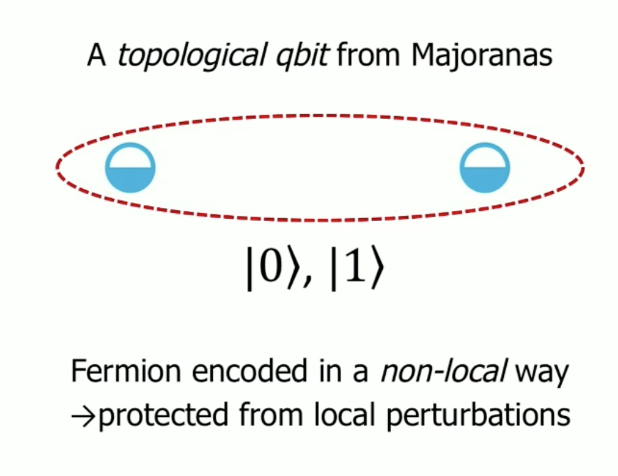
This is our topological qubit: two Majorana bound states form one topoloigical qubits, which is protected against almost all sorts of perturbations and is expected to have a very long coherence time. For that reasons it is very interesting to look for Majorana Bound states in condensed matter. Where should we look for Majoranas in condensed matter? We can again start from the concept of particle and antiparticle.
As I told you before, the equivalent of particles and antiparticles in condensed matter are electrons and holes.
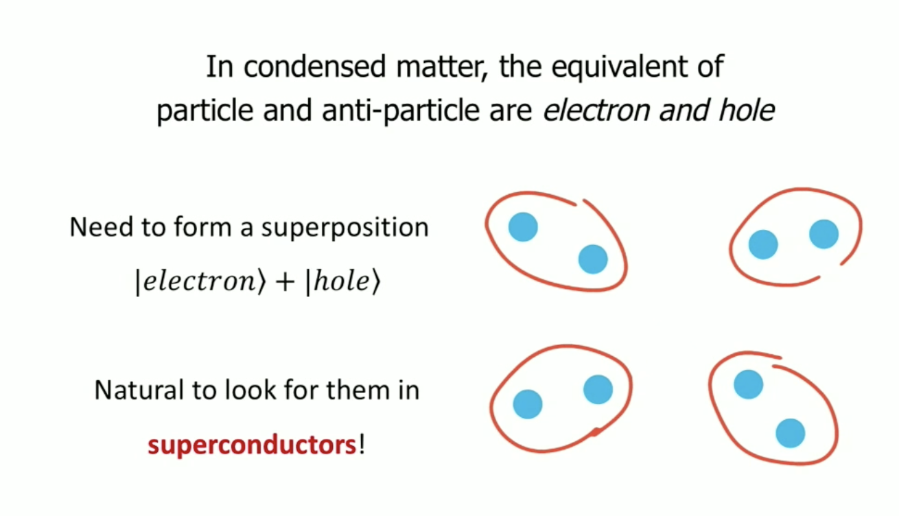
A Majorana is a superposition of those two things. The problem is however that electron and hole have opposite charge. It is usually impossible to form a superposition of them. It however turns out that a good system for Majoranas are superconductors.
In superconductors we have a sea of Cooper pairs. Cooper pairs are states consisting of 2 electrons. Suppose now we have a single hole in our system. If I take just one Cooper pair out of the vast sea of Cooper pairs, then this Cooper pair together with the hole just looks like a single electron. The distinction between electron and a hole are thus effectively blurred in a superconductor. Hence, we can form a linear superposition of electrons and holes there! It is thus very natural to look for Majorana states in superconductors.
Main takeaways
A Majorana fermion is a fermion which is its own antiparticle. In principle they could exist, but nobody knows for sure if they do.
In condensed matter, Majoranas regard Majorana bound states, rather than actual Majorana fermions.
Two Majoranas together form one fermionic state and they always come in pairs.
The possibility of spatially separating Majoranas protect against local perturbations, laying the basis of topological qubits.
Superconductors are a good system for Majoranas, as linear superpositions of electrons and holes can be formed.
7.3. Majorana bound states in superconductors#
Majorana bound states can appear quite naturally in superconductors. But, how can we find the Marjoranas? We will explain more about that
V
Let us now look a little bit more in detail, how we can find Majorana bound states in superconductors. We showed that Majorana bound states can appear quite naturally there. The blurring of electron and hole can be described mathematically as a so-called particle-hole symmetry. For a particle at energy E you must have an antiparticle at energy minus E.
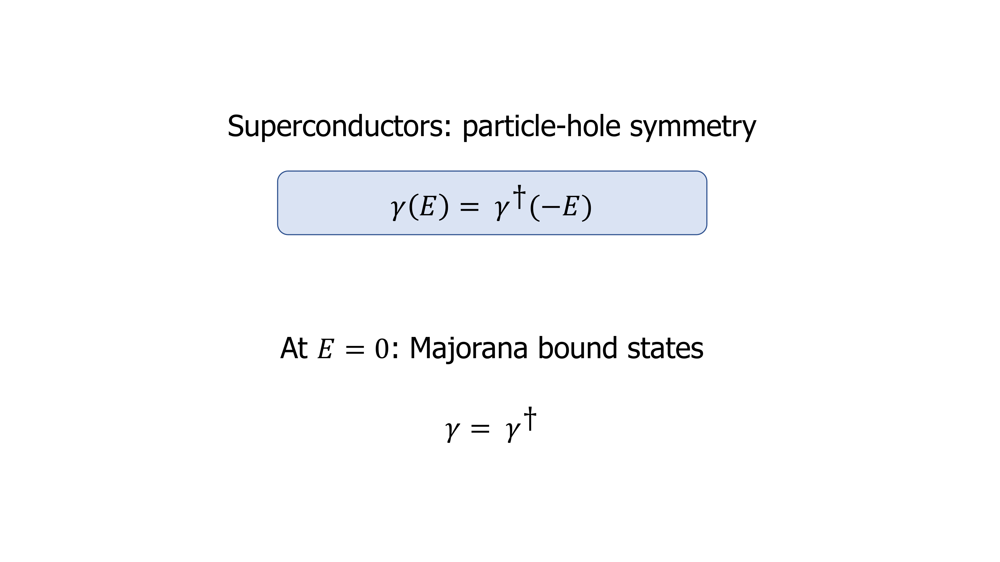
That is given by this formula here, with the annihilation operator gamma at energy E equals the creation operator at energy minus E. For zero energy we then immediately get Majorana bound states! In this case the Majorana creation operator, gamma dagger, equals the annihilation operator gamma. So, all we need to do is look for states in superconductors with zero energy! Interestingly, the particle hole symmetry also helps to protect these Majorana bound states. We say that they are topologically protected. Let me show you now in a simple picture what this actually means.
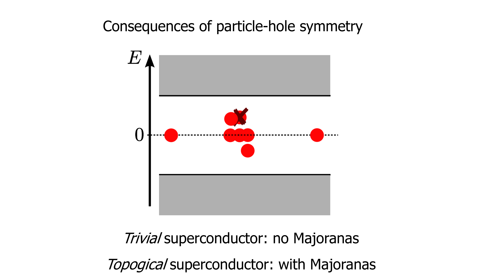
Particle-hole symmetry means that the energy spectrum must be symmetric around zero energy. This spectrum has a superconducting gap, this is shown as a white region in the slides. If you have one state at zero energy, one Majorana bound state, then this state is protected and has to remain at zero energy, regardless of what kind of perturbations you do to your systems. If the Majorana state were to move away from 0 energy, the system would not have particle hole symmetry anymore. That symmetry is fundamental, so this is not allowed. This way the particle hole symmetry protects the Majorana bound states. We call these states symmetry protected topological states. Now I told you before, that in real condensed matter systems Majorana bound states always come in pairs. Any normal fermionic state can be described with two Majorana states. In this case a perturbation can actually move them symmetrically in the spectrum. So that of course is not protected. However, true Majorana bound states are spatially separated, far apart and cannot talk to each other. Each of those is then again protected by the particle hole symmetry. We can thus distinguish two kinds of superconductors: either there are Majorana bound states, and then they are protected. Or there are no Majoranas at all. A superconductor that has Majoranas we call a topological superconductor. A superconductor without Majorana fermions we call trivial superconductor. Now, there is actually an interesting aspect about Majorana bound states being at 0 energy.
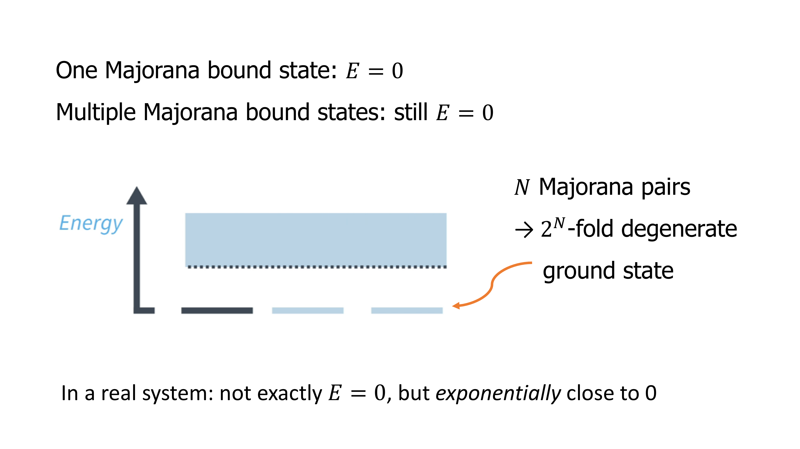
You can have multiple Majorana pairs and the states that you can make out of these Majorana pairs all have zero energy, too. So, with N Majorana bound state pairs, you actually have a 2^N fold degenerate ground state, because each pair can be occupied or not occupied. In a topological superconductors we thus generally have a gap, and at 0 energy a 2^N fold degenerate ground state. This will be important in a later stage, as this allows for topologically protected operations on Majorana bound states.
This will be covered in a separate section. In reality, we cannot separate the Majorana bound states infinitely far from each other. Hence there is a small overlap left over. But this overlap is then exponentially small, so the states will be exponentially close to zero energy, which is good enough. At this point it might seem easy to find Majoranas: we just have to find states in superconductors with zero energy.
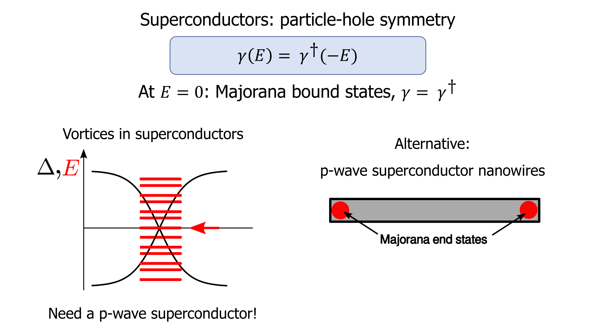
But this is actually not as easy as it seems. Because, how could one get states at small energies in a superconductor? After all, there is the superconducting gap. We could consider though the situation where there is a vortex in the superconductor. In a vortex, magnetic flux penetrates the superconductor and locally suppresses the superconducting gap Delta. The suppressed gap is shown here by a black line. Still, if you calculate the bound states of this system, you find that there is only a state at a finite energy. The reason for this, is the quantum mechanical zero-point motion. To get rid of the zero-point motion one needs to consider unconventional superconductor, such as so called P-wave superconductors. In that case, there is an additional Berry phase of Pi that can cancel the zero-point motion. We get exactly then one state at zero energy, which is a Majorana bound state. It turns out that instead of going to vortices, which are actually hard to control, we can go to one dimensional systems: nanowires. If we make a nanowire out of P-wave superconductor, you will also get Majorana states at the ends of the wire. So, a P-wave superconductor would be nice to have, but it turns out that all the superconductors in nature that we know of are just trivial superconductors.
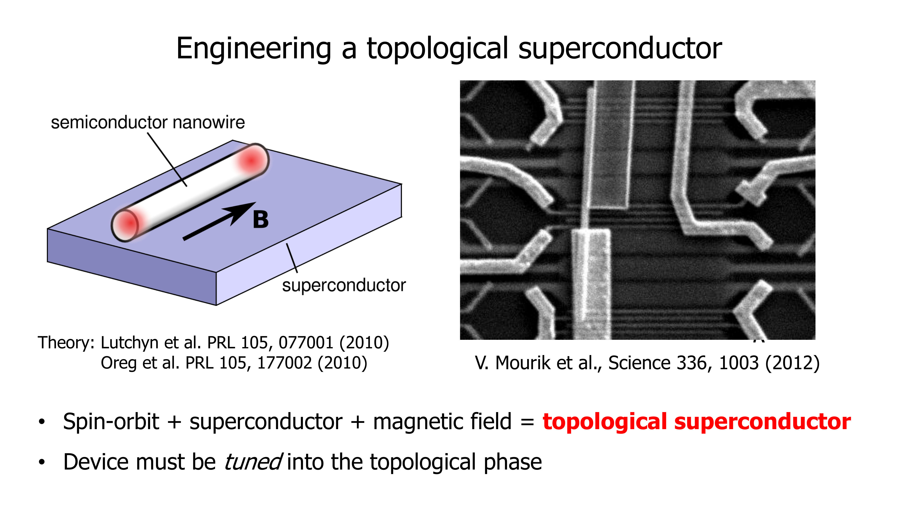
There are some candidates that might be P-wave superconductors, but nobody knows for sure. The most promising approach is thus to engineer the P-wave superconductor out of normal, ordinary trivial materials. I want to focus here on one particular example. It was shown that a semiconducting nanowire with spin-orbit interaction in proximity to a s-wave superconductor in a finite magnetic field can support Majoranas. Now one has to put all of these ingredients together, but this is not enough, one also has to tune some parameters to get to the topological phase. In particular, in this case we need to tune the magnetic field so that the Zeeman splitting exceeds the superconducting gap. Additionally, we also have to tune the chemical potential into the Zeeman gap. If we can do this, for example, with a gate, then Majorana bound states will appear at the right gate settings and magnetic field. This is now a system you can make in the lab. All the ingredients are in principle known experimentally. This was done for the first time in 2012 in Delft, and this is what in practice the experimental system looks like.
Main takeaways
Particle-hole symmetry is fundamental to Majoranas. For a particle at energy E must have an antiparticle(hole) at energy –E.
At zero energy, we then get immediately Majorana Bounds states. We thus have to look for superconductors with zero energy.
Quantum mechanical zero-point motion makes it difficult to find states with zero energy in conventional superconductors.
Experimentalists attempt to engineer a nontrivial superconductor out of ordinary materials to find Majoranas.
7.4. Majorana experiments#
Now let’s talk about the current status of the experiments on Majorana bound states, and explain how the Majoranas can be measured.
Now that we know how to make Majorana systems in principle, lets look at the current experimental status. We ended the previously with the picture of the Delft experiment where Majorana bound states were observed for the first time. Remember that Majoranas only appeared by tuning the system into a topological phase.
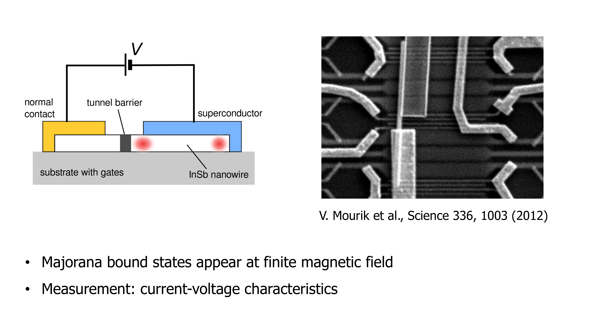
In particular, they only appear at a finite magnetic field. In order to observe Majorana bound states, one needs to measure them. How do you actually measure Majoranas? It turns out that a standard current-voltage measurement is enough. Apply a voltage between a normal contact and the superconducting part – where the Majoranas are located - and measure the current that flows across a tunnel barrier. This so-called conductance spectroscopy is one of the standard techniques to actually find Majorana bound states. I want to spend a little bit of time to explain how this works. Let us first understand how current flows in normal-superconducting junctions in general. We have a normal metal in contact with a superconductor. We want current to flow from the normal metal to the superconductor. This should be possible, as the superconductor has no resistance. However, the transport processes turn out to be a little bit more involved. Let us first consider the case of a normal superconductor and forget about Majoranas for a while.
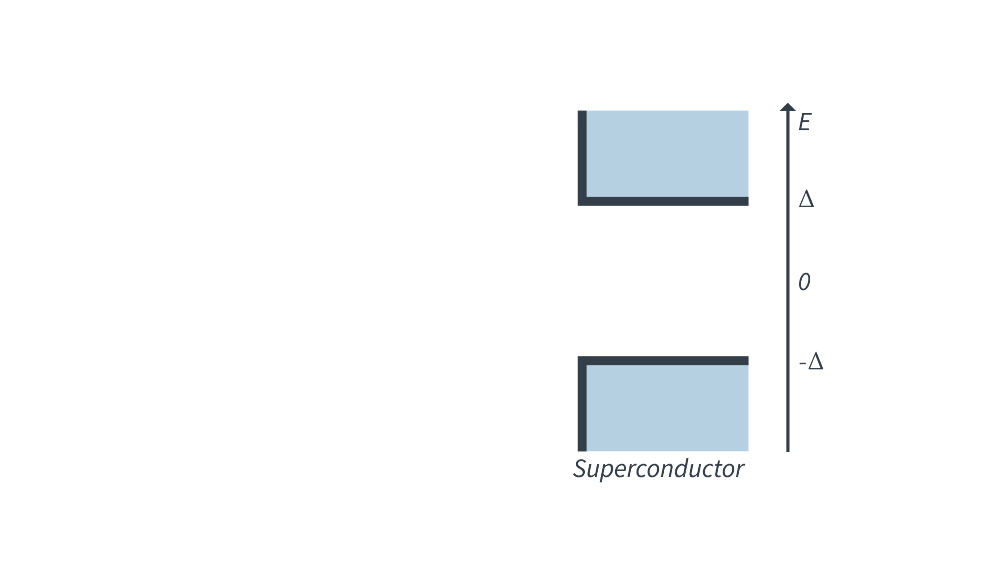
We are interested in current flowing from the normal metal to the superconductor. Current in the normal metal is carried by electrons. However, when an electron comes to the superconductor something funny happens. The superconductor has a quasiparticle gap, which doesn’t allow single electrons in the system. If an electron comes there, naïvely one would say the electron is just reflected, but this would result in no current through the superconductor. We now have to remember that current in a superconductor is carried by Cooper pairs, which are pairs of 2 electrons.
So, when a single electron arrives at the superconductor it can actually go into the superconductor as a Cooper pair, but it needs a second electron. The second electron comes from the Fermi sea, leaving a hole in the normal metal. This hole then travels backwards in the metal. This process carries then a current, because the electron is negatively charged and travels to the right, the hole is positively charged and travels to the left. It is called Andreev reflection, and is the fundamental process of current flowing in a normal-superconducting junction. Conductance spectroscopy is usually done in the presence of a tunnel barrier in the junction.
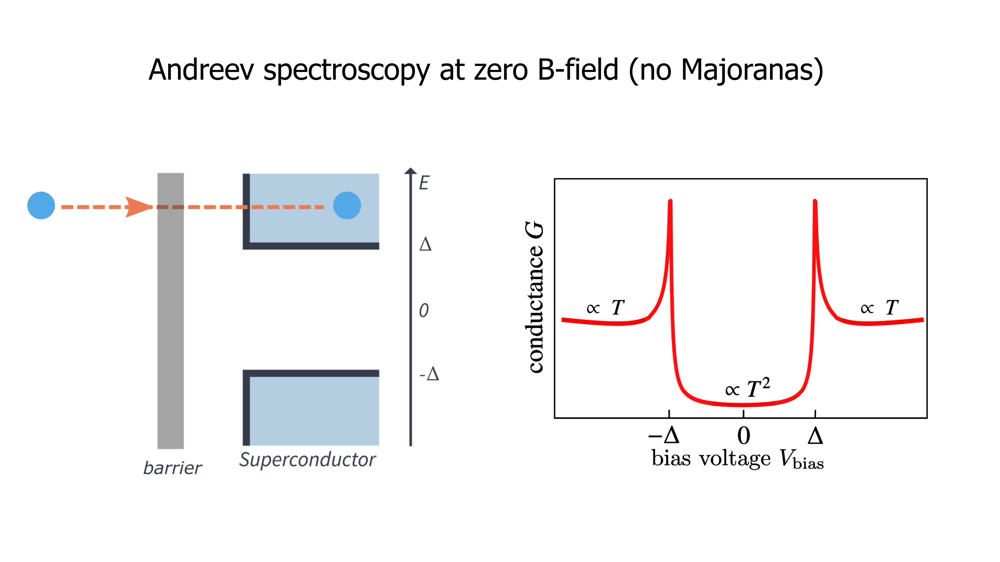
If the bias voltage is small, then current is carried by Andreev reflection. In this case the electron has to go through the barrier and the hole has to come back, so there are two tunnelling events. Each process has a small tunnel probability T. The total probability of this process is thus proportional to T^2. For a bias voltage larger than the superconducting gap, the electron can just enter the superconductor as an electron. It thus has to go only once through the barrier, so the conductance is then just proportional to the tunnelling probability T. Since T is smaller than 1, this probability is higher than the previous case. Inside the gap the conductance is thus lower than outside the gap. Right at the gap there is a resonant behaviour, so that in total the conductance has this particular shape as shown on the slide. Note that one can directly read off the superconducting gap Delta from such a measurement. What happens if you have a Majorana bound state there?
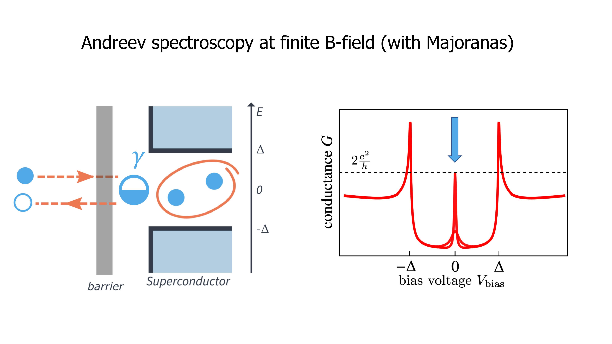
A Majorana bound state always sits at zero energy, and gives rise to a resonant process at zero bias voltage. In the conductance, we thus observe a peak at zero bias voltage. Since this is a resonant process, the conductance is actually quantized at the value of 2E^2/h – at least for zero temperature. At finite temperature, this peak can actually be lower, if thermal broadening exceeds the tunnel coupling. Common to both scenarios is that we expect to see a peak at zero bias voltage inside a superconducting gap, as a signature of Majorana bound states. This particular measurement was done 2012 in Delft.
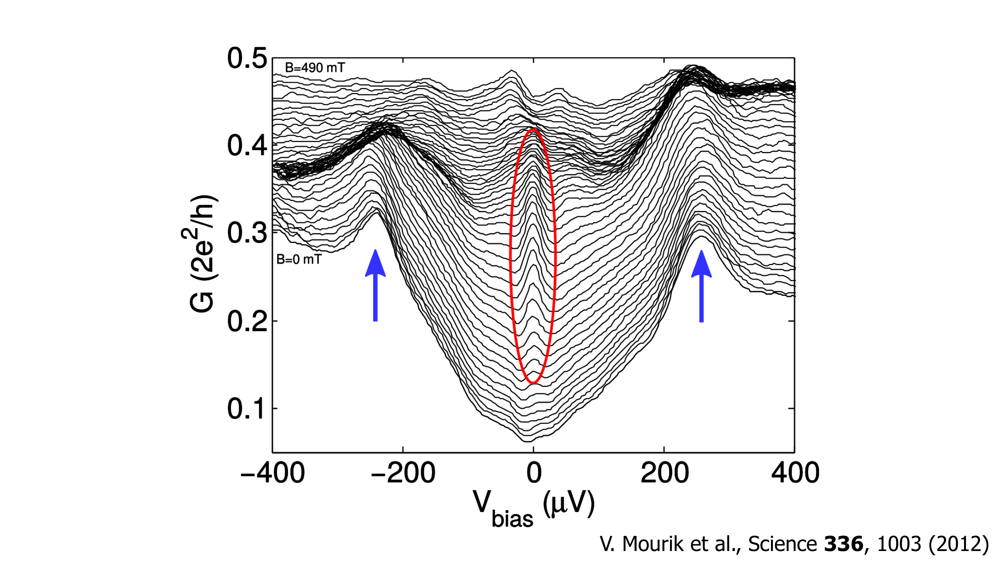
We show here the conductance at zero magnetic field. Notice the gap structure that I explained to you before, a supressed conductance inside the gap, and conductance peaks at the value of the induced superconducting gap. This was first a zero magnetic field, so no Majoranas. The measurements for finite magnetic field are all the additional curves that are shown here in this plot. The magnetic field increases as you go further to the top. We observe that as a magnetic field is increased, suddenly a peak at zero bias voltage is emerging. This is the signature of a Majorana bound state. Now, this was already six years ago. The signatures then were non-ideal: the peak is not quantized as we might have hoped for. Also, there are other effects that might induce a peak at zero bias, besides Majoranas. However, since 2012 experimentalists have worked very hard on establishing Majoranas more in system.
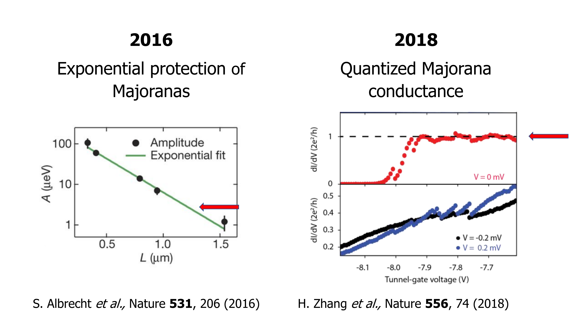
Let us highlight 2 milestones in this field. The first one was the experiment in 2016 in the group of Charlie Marcus in Copenhagen. They showed that the states in these nanowires have an energy that is exponentially close to zero as a function of the length of the nanowire. This shows the exponential protection of Majoranas experimentally. Another important milestone was again in Delft in the group of Leo Kouwenhoven. After optimizing the nanowires, they found a quantized conductance peak of the Majorana bound states. If you take all of these experiments together, there is actually very strong evidence that we have Majorana bound states in these nanowire systems. We covered in detail about the nanowire platform for Majorana bound states.
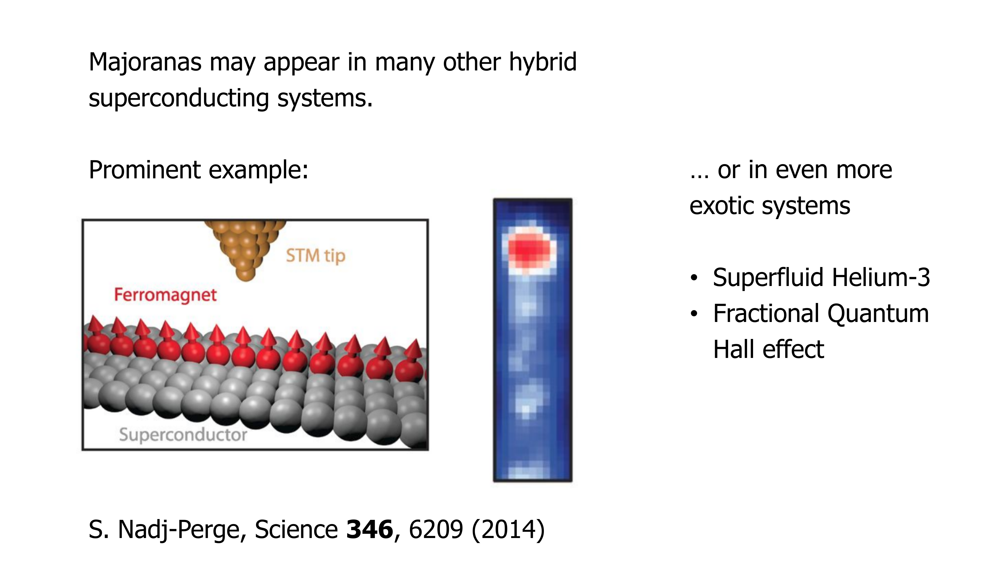
To wrap it up let’s emphasize that there are more possible systems hosting them and show one other particular example here. It was predicted that a chain of magnetic atoms on top of a superconductor would also host Majoranas. The group of Ali Yazdani built this system using a STM, and indeed found states localized at the ends of these magnetics chains. We also want to mention that actually Majorana particles do not only exist in superconducting systems but they can also appear in interacting systems, for example superfluid Helium or fraction quantum Hall effect. So far, nanowire-based systems remain the most technologically advanced. Experimentalists are working now hard on realizing the first topological qubit there. How such a qubit would work is the topic of the next MOOC videos.
Main takeaways
Majoranas only appear at a finite magnetic field.
Measurement of Majoranas is done with a standard current-voltage measurement called conductance spectroscopy.
The fundamental process of current flowing in a junction between a normal conductor and a superconductor is called Andreev reflection.
Majorana Bound states always sit at zero energy and give rise to a resonant process at zero bias voltage.
7.4.1. Practice Quiz 10#
7.4.1.1. Question 1#
What is the antiparticle of each of the following particles? (Capitalize the first letter of each word in your answer)
Electron
unanswered
Majorana Fermion
7.4.1.2. Question 2#
A Majorana bound state in a superconductor has …
positive energy.
zero energy.
negative energy.
7.4.1.3. Question 3: Condensed matter systems#
There are a lot of people working on realizing Majorana’s in condensed matter systems.
What do we refer to when we are talking about Majorana’s in condensed matter systems?
Dirac fermions which, with an extra extension, are described as Majorana’s
Majorana bound states
Majorana fermions
7.4.2. Quiz 10: Topological qubits#
This quiz is closely related to the introducing topological qubits. We recommend to review this section carefully because the questions are intended to check that you understood (parts of) it.
7.4.2.1. Question 1: Majorana fermion#
The Majorana fermion is special because:
It is a fermion which is its own antiparticle.
There are no errors on the fermion.
The creation and annihilation operator sum to identity.
It has spin 1.
Explanation In contrast to Dirac fermions, which are particles who aren’t their own antiparticle, Majorana fermions are their own antiparticle.
7.4.2.2. Question 2: A proof#
We can create the Majorana operators from a superposition of creation and annihilation operators. Show that indeed the corresponding operators are Majorana operators. Furthermore, show that the creation and annihilation operators for normal fermions are not Majorana operators.
Did you do the proof for yourself?
Yes
No
7.4.2.3. Question 3: A superposition#
a spin up electron and a spin down electron.
an electron and a hole.
one hole and two holes.
two electrons and two holes.
Explanation A Majorana bound state should be its own antiparticle, which is only the case when its an equal superposition of electrons and holes. Also, it should act as a fermion, so it is an equal superposition of one electron and one hole.
7.4.2.4. Question 4: A qubit#
a superposition of an electron and a hole.
two superpositions of an electron and a hole.
the charge of the electron.
Explanation The buidling blocks in condensed matter are always fermions. Since a fermionic can be described by 2 Majorana bound states, we thus need two majorana bound states for 1 qubit.
7.4.2.5. Question 5: Protected from the environment#
The Majorana bound states promise to be protected from any environmental perturbations and are therefore excellent candidates for qubits. How is a single Majorana bound state protected from the environment?
A Majorana bound state has 0 energy which makes all its interactions with the environment equal to 0 as well.
The symmetry of the superconductor prohibits the Majorana bound state from moving.
Majorana bound states reside in the superconducting gap where no electrons are allowed. It therefore has nothing to interact with.
If a Majorana bound state moves, a second bound state arises with the opposite energy. These are exactly the two states we can use as a qubit. unanswered
Explanation If there is no state to fill the spot at the negative energy corresponding to the perturbation, the Majorana is not allowed to move due to the inherent symmetry of the superconductor.
7.4.2.6. Question 6: Spatially separating a pair#
As we have seen, Majorana’s always come in pairs. This brings slight inconveniences regarding the topological protection discussed in the previous question. It turns out spatially separating the states solves these inconveniences.
Why do we need to separate a Majorana pair spatially to achieve protection from the environment?
They are now the only particles allowed in the band gap, so if they can’t interact with eachother, they will be protected.
If they can’t communicate to eachother, we can treat them as two single Majorana bound states, which are topologically protected by symmetry.
If they are too close, they will collapse into an electron.
Spatially separating them will cause an electromagnetic field which counteracts any small environmental perturbations.
Explanation If there is communication between Majorana’s, a perturbation will move them symmetrically in the superconductor away from 0. Then it is thus not a Majorana bound state anymore. If they are far away, they can communicate, and thus also not move symmetrically away from zero. They are thus again topologically protected.
7.4.2.7. Question 7: Conventional superconducters#
It might look simple to find Majorana’s. We just need to find states at exactly 0 energy. However, it turns out to be quite nontrivial.
Why can’t we find topological superconductors in conventional superconductors?
There are no states at 0 energy because of quantum mechanical zero point motion.
The magnetic flux supresses the superconducting gap, which causes an always present finite energy for any state.
The Berry phase of pi shifts the states away from 0 energy.
We never encounter the vortices needed to form states at 0 energy.
Explanation The quantum mechanical zero point motion always moves the sates away from 0.
7.4.2.8. Question 8: P-wave superconductor#
The solution is using a different type of superconductor, a P-wave superconductor. Unfortunately, these haven’t been found in nature, so we need to create them ourselves.
What do we need to engineer a P-wave superconductor? Mark the four that correctly apply.
S-wave superconductor
Finite magnetic field
Semiconducting nanowires with spin-orbit interaction
Quantum mechanical zero point motion
2^N degenerate ground states
Appropriately tune the chemical potential
Explanation We at first need a trivial superconductor under a finite magnetic field. Then, we also require semiconducting nanowires in the presence of spin-orbit coupling. Finally we need to tune the chemical potential such that it is within the Zeeman gap caused by the magnetic field.
7.4.3. Question 9: Entering the metal#
This question is about current flowing from a metal to a normal superconductor. Remember that in a metal we have electrons which are the charge carriers, where in superconductors we have Cooper pairs.
Fill in the blanks: To enter the superconductor the electron needs . \(1.\) \(2.\) then travels ‘backwards’ in the metal. This is called \(3.\)
1 = another electron, 2= A newly created hole, 3= Andreev reflection
1 = a Cooper pair, = Another electron, = a Dirac fermion
1 = another electron, = Andreev reflection, = a Dirac fermion
1= a hole, = Another electron, = superconductor current
Explanation The electron can only enter the superconductor accompanied by another electron as a “Cooper pair”. This leaves a hole travelling backwards in the metal. The process is called Andreev refelection.
7.4.3.1. Question 10: Measurements#
A Majorana bound state always sits at zero energy and gives rise to a resonant process at zero bias voltage. What do you expect to see in measurements which could hint towards Majorana particles?
If we measure the conductance at finite magnetic field, we see a small peak around zero bias voltage. This hints towards Majorana particles, as single electrons won’t have the energy to enter the superconductor.
At finite magnetic field, the superposition of a hole and an electron has a peak in energy. We measure this by the conductance and we will see a peak when the bias voltage is approximately equal to the superconducting gap. correct